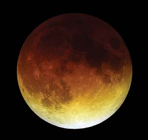
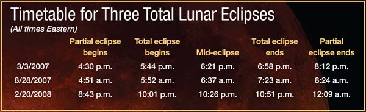
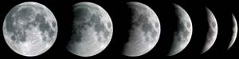

The eerie, lovely event called a total eclipse of the moon occurs when there’s an exact lineup of the sun, Earth and moon. It hasn’t happened since Oct. 27, 2004 - the famous evening the Boston Red Sox became World Series champions for the first time since 1918. But over the next 12 months, the United States will experience an almost unprecedented bounty of three total lunar eclipses - on March 3, Aug. 28 and Feb. 20, 2008.
What does a typical total eclipse of the moon look like? First, for more than an hour, you can see the growing dark “bite” of the Earth’s shadow on one side of the full moon. This shadow’s curved edge is visible proof that our planet is round. If you’re out in the country, you’ll see extra stars start to come out in droves as the moon fades. And when the shadow’s coverage is finally complete (the total eclipse), you’ll be able to see the moon’s face bathed with a beautiful light that can range from dark brown and red to bright orange and yellow.
The March 3 eclipse will be approaching totality when the moon rises at dusk in New England. It will be clearly visible in the east, but only marginally so as far west as Denver. In contrast, the Aug. 28 eclipse will occur in the final hours of night and favors viewers in the western United States. For viewers in the eastern third of the nation, the moon will set at sunrise, just before the total eclipse is finished.
The eclipse on Feb. 20, 2008, will be timed such that all of North America can enjoy it. Mid-eclipse will take place at 10:26 p.m. on the East Coast and earlier in the evening farther west. This eclipse offers a once-in-a-lifetime added attraction: the moon being closely flanked by Saturn and the bright star Regulus, the heart of Leo the Lion. After this, you won’t be able to see another total eclipse of the moon until 2010.
Lunar eclipses are completely safe to watch, and you don’t even need a telescope. So grab an outdoor seat and enjoy the shows! To learn more about lunar eclipses, visit www.mreclipse.com.
|
 FRED ESPENAK There are three total lunar eclipses coming up. Be sure to observe these rare events - you'll be treated to a spectacularly colorful moon. |
 FRED SCHAAF There are three total lunar eclipses coming up. Be sure to observe these rare events - you'll be treated to a spectacularly colorful moon. |
 JOHNNY HORNE |